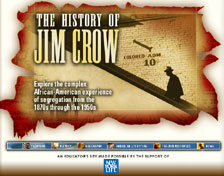
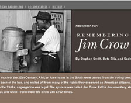

This is an archived copy of History Matters, provided by the Roy Rosenzweig Center for History and New Media. To explore this content in a new interface, visit Who Built America?.

The History of Jim Crow
http://www.pbs.org/wnet/jimcrow/
Produced as part of the PBS documentary The Rise and Fall of Jim Crow with funding from New York Life.
Reviewed March 6 and April 9, 2003.
Remembering Jim Crow
http://www.americanradioworks.org/features/remembering/
American Radio Works in cooperation with the Center for Documentary Studies at Duke University and its Behind the Veil oral history project.
Reviewed Feb. 12 and April 9, 2003.

The History of Jim Crow is a wonderful Web site that provides a wealth of historical and pedagogical materials on the segregation and the disfranchisement of African Americans from Reconstruction through the modern civil rights movement. The site was produced in conjunction with the PBS documentary The Rise and Fall of Jim Crow and is divided into five sections. One provides teachers guides to the four-part television series, while another includes brief overview essays on the origins, transformation, and end of Jim Crow. Three of the overviews are accompanied by in-depth essays that include hyperlinks to esoteric terms and concepts and to biographies of key figures and summaries of events. The geography section is particularly well designed. The content is organized in a series of interactive maps showing, among other things, Jim Crow laws in and outside of the South, patterns of lynchings, the locations of formative Supreme Court decisions on civil rights, and African American pioneers in the sporting world.
These content sections provide a range of historical materials in a clear and interesting Web design, yet clearly it is the teaching resources that set this Web site apart. The “Jim Crow and Literature” segment has detailed lesson plans for ten novels. These range from a nine-week unit on Harper Lee’s To Kill a Mockingbird (1960) that is geared toward middle school students to an essay-based exercise analyzing literary reviews of Ralph Ellison’s The Invisible Man (1947) that could fit easily into an undergraduate syllabus. The bulk of the materials in the separate teaching resources segment are suited for middle school and high school students; still, the variety is impressive. They include lesson plans, module exercises, first-person written histories of life under Jim Crow, and an image gallery. Also, a gateway to other Jim Crow Web sites features concise commentary and critiques by practicing teachers. The teaching modules are excellent. They challenge students to analyze primary source documents, role-play as historical actors, and make historically informed predictions. PDF (portable document format) links accompany the lesson plans, allowing for easy incorporation into the classroom.
The History of Jim Crow also does well in using the unique interactive qualities of the Web to help revise and build the materials offered here. A section on the “Jim Crow Press” provides brief histories of African American-owned or -operated newspapers in various states. Many of the lesser-known newspapers are merely listed, and visitors are encouraged to do their own research to help build the archive. Most pages include a link “Do You Have Another Opinion?” in which visitors are encouraged to send in comments, corrections, or competing interpretations of the material presented.

The American Radio Works (ARW) Web documentary Remembering Jim Crow is designed with a more general audience in mind. The site is produced in conjunction with a multimedia book project of the same name (2001) edited by William H. Chafe, Raymond Gavins, and Robert Korstad. Material for the Web documentary, as well as for a radio documentary that aired on National Public Radio (and which is available through this site), is drawn largely from interviews in the mid-1990s with members of the last living generation of African Americans to reach adulthood in the era of legalized racial segregation.
The strength of Remembering Jim Crow is in the quality and accessibility of the oral history audio excerpts. There are a total of twenty-eight on the site, ranging in length from 26 seconds to 9:55. With the click of a mouse, one hears the actual voices of men and women recounting their own tales of hardship and struggle. The audio clips are divided into six documentary sections—several of which are difficult to distinguish thematicallythat deal with a particular topic in the era’s history. In addition to the audio clips, each segment includes a brief introductory paragraph and one or two “slideshows” of photographs. The final section departs from the book project by including a section titled “Whites Remember Jim Crow” that includes a handful of interviews with white residents of New Iberia Parish in Louisiana. The section has photos of the interviewees as well as Farm Security Administration photos of New Iberia Parish taken in 1939.
In addition, Remembering Jim Crow includes a segment it calls “personal histories” of Jim Crow. It is unclear how ARW gathered these written accounts. They are not taken from the oral histories that make up the bulk of the documentary, and many come from people whose lives seem to have been touched only peripherally by Jim Crow, at least as it was practiced in the South. The transcripts of oral histories included in the teaching resources section of The History of Jim Crow are more thorough and better suited for the classroom. The audio excerpts on Remembering Jim Crow, however, fit nicely with the teaching materials provided by The History of Jim Crow. Taken together, they provide an abundance of materials to investigate the tragedies and the triumphs of this disquieting period in America’s history.
Joseph Crespino
Emory University
Atlanta, Georgia